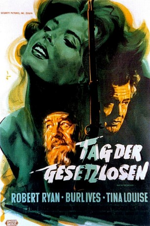

#3076 Tag der Gesetzlosen
Alternativ: Day of the Outlaw
 
 IMDB-Wertung: 7.3 / 10
IMDB-Wertung: 7.3 / 10  Metascore: 0
Metascore: 0 
Der mürrische Viehzüchter Blaise Starrett (Robert Ryan) macht sich im vom tiefen Winter gebeutelten Wyoming auf in die kleine Siedlung Bitters, um mit seinem Nachbarn Hal Crane (Alan Marshal) abzurechnen, der es gewagt hat, seine Weiden mit Stacheldraht zu umzäunen. Dessen Frau Helen (Tina Louise), auf die Starrett ohnehin ein Auge geworfen zu haben scheint, versucht zu vermitteln und bietet sich in letzter Not zur vollen Verfügung an, wenn doch nur ihr Gatte verschont bliebe.
Jahr: 1959
Dauer: 88 Minuten
FSK: 16
Land: USA Studio: United ArtistsTonspuren: DD2.0 - ,
Untertitel:
Auflösung: 1080p (1920x1080) Größe: 5509 MB
Genre: Western
Regisseur: André De Toth
Drehbuch: Lee E. Wells, Philip Yordan
Soundtrack: Alexander Courage
Darsteller:
 Robert Ryan als Blaise Starrett
Robert Ryan als Blaise Starrett Burl Ives als Jack Bruhn
Burl Ives als Jack Bruhn- Tina Louise als Helen Crane
- David Nelson als Gene, Bruhn's Gang
 Nehemiah Persoff als Dan, Starret's Foreman
Nehemiah Persoff als Dan, Starret's Foreman Jack Lambert als Tex, Bruhn's gang
Jack Lambert als Tex, Bruhn's gang Frank DeKova als Denver, Bruhn's Gang
Frank DeKova als Denver, Bruhn's Gang Elisha Cook Jr. als Larry Teter, town barber
Elisha Cook Jr. als Larry Teter, town barber Dabbs Greer als Doc Langer, Veterinarian
Dabbs Greer als Doc Langer, Veterinarian Donald Elson als Vic, General Store Owner
Donald Elson als Vic, General Store Owner- Michael McGreevey als Bobby, Vic's Son
 William Schallert als Preston , uncredited
William Schallert als Preston , uncredited- Alan Marshal als Hal Crane
- Venetia Stevenson als Ernine, Vic's Daughter
 Lance Fuller als Pace, Bruhn's Gang
Lance Fuller als Pace, Bruhn's Gang- Betsy Jones-Moreland als Mrs. Preston
- Helen Westcott als Vivian
- Robert Cornthwaite als Tommy Preston, Wyoming Hotel Owner
- Dan Sheridan als (uncredited
- Arthur Space als Clay , uncredited
- Paul Wexler als Vause, Bruhn's Gang , uncredited
- Jack Woody als Shorty, Bruhn's Gang , uncredited
Datei: X:\HD-Western-1900-1959\Tag der Gesetzlosen (1959, FSK16, 1920x1080).mkv seit 22.01.2016
Festplatte: HD Eastern+Western
 Es gibt insgesamt 98 Filme in der Gruppe 'HD-Western-1900-1959'
Es gibt insgesamt 98 Filme in der Gruppe 'HD-Western-1900-1959'